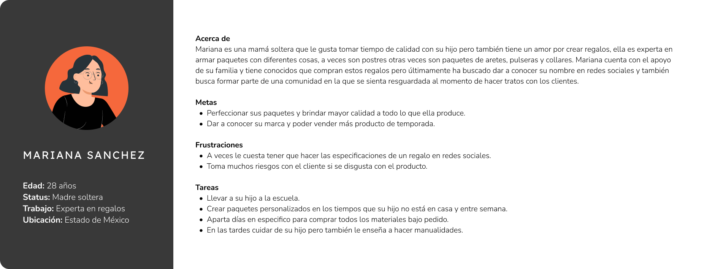
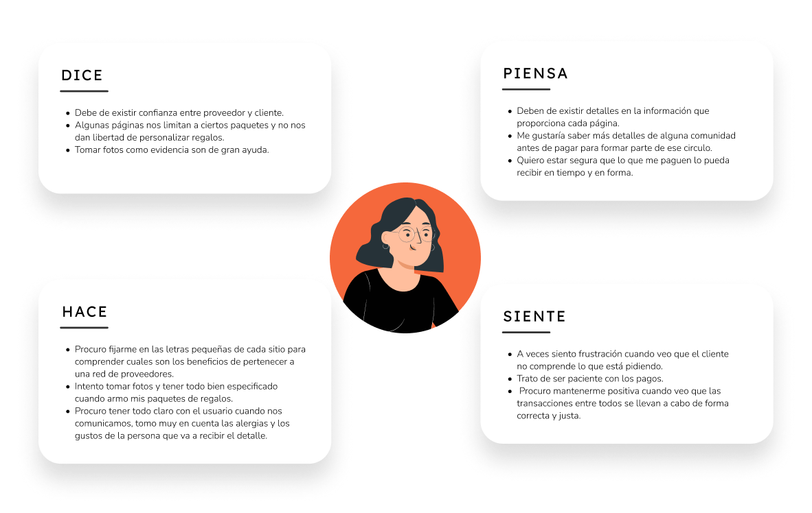
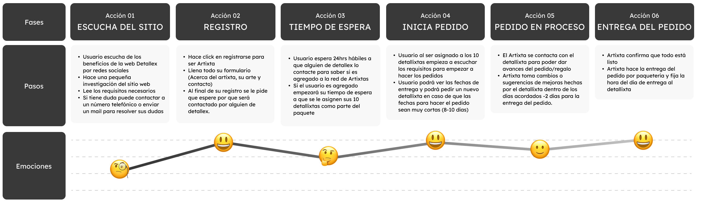
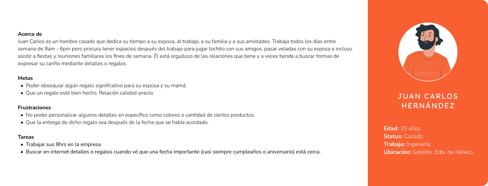
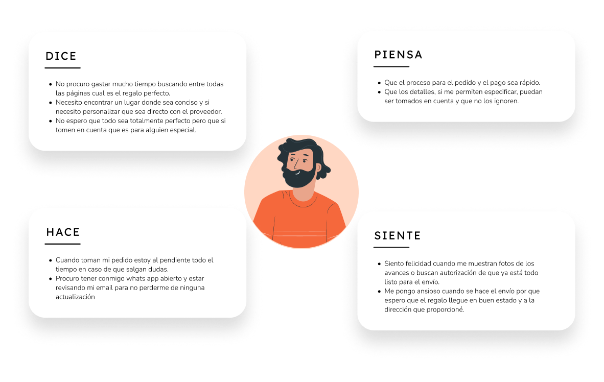
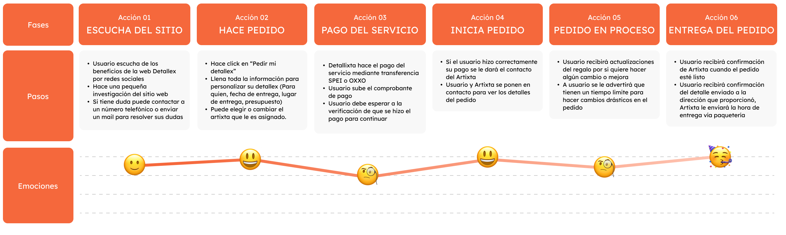
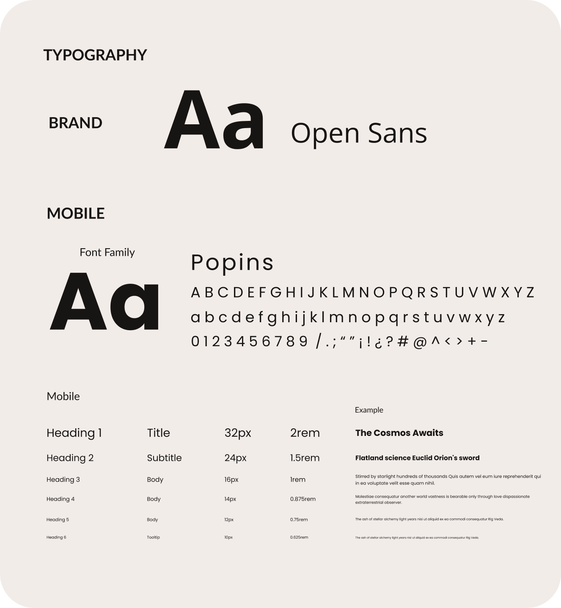
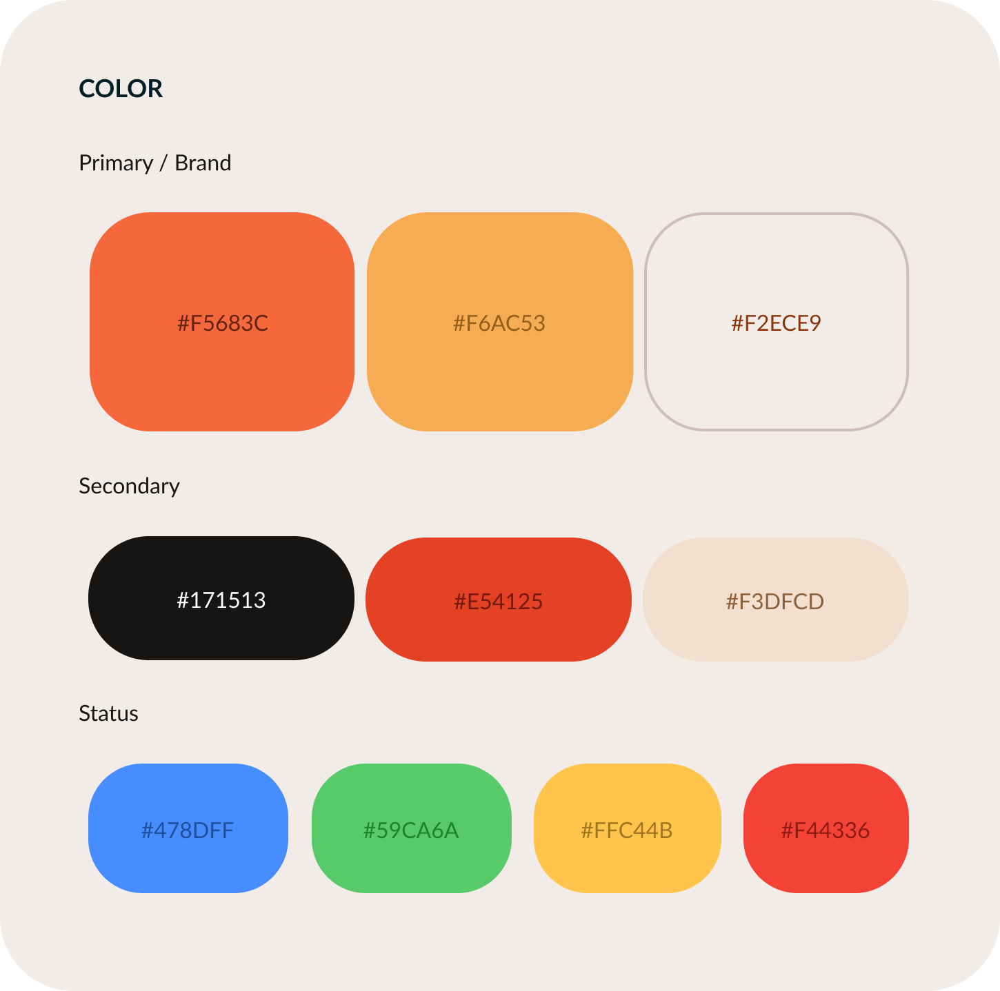
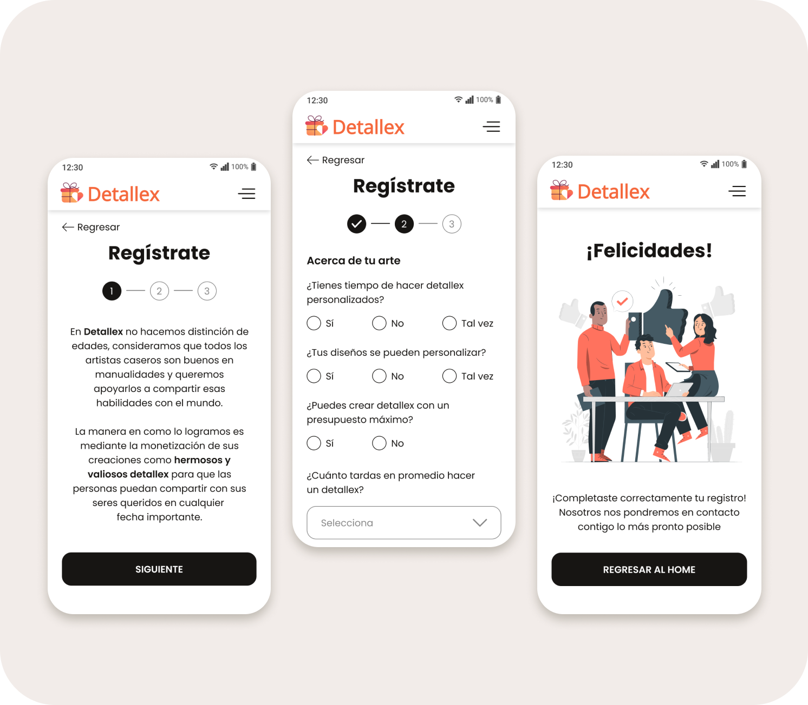
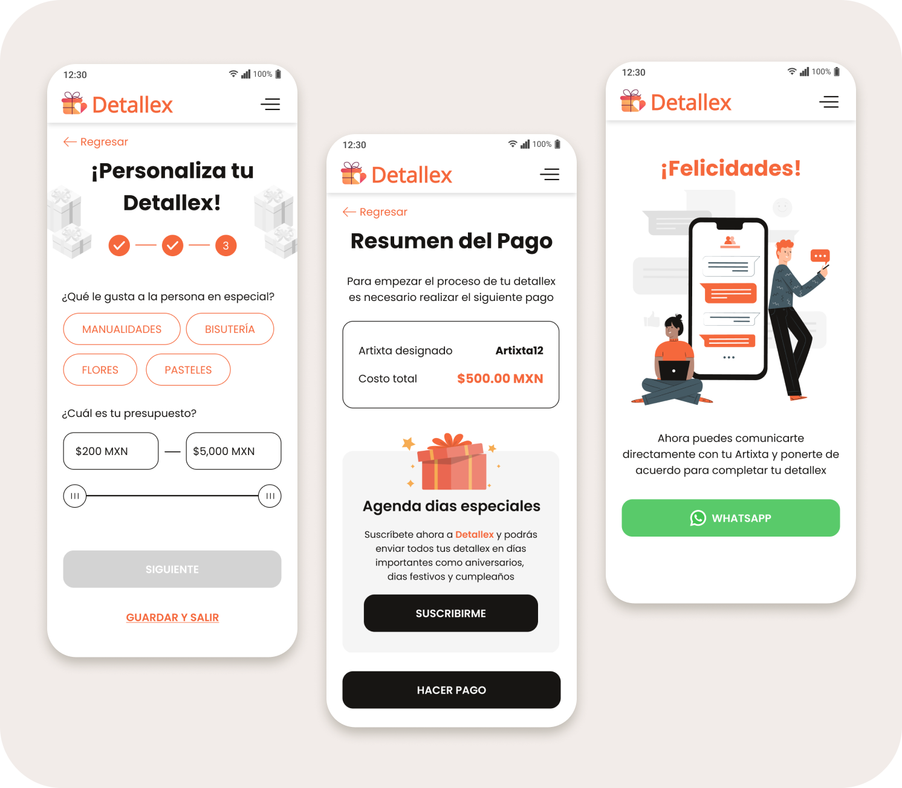

User flow

Project
Detallex es un servicio que desea conectar a las personas que quieren dar un detalle a sus seres queridos, busca crear una red de usuarios que puedan brindar sus servicios como lo son las manualidades, bisutería, pasteles y/o flores creando así un sistema de confianza al consumidor.
Responsable de rediseño, ideación, diseño de interacción, diseño de logo, arquitectura y prototipado.
Junio 2022
Figma
The problem
El creador de Detallex necesitaba un rediseño a su sitio web donde pudiera brindar un mejor servicio para sus dos usuarios target: El cliente y el creador de las manualidades.
La idea principal era tener un sitio web donde ambos usuarios pudieran llevar a cabo todo el flujo en la que se hacia el pedido del servicio, pagarlo y llevar a cabo la comunicación entre ambos usuarios por medio de whats app cerca de la zona en la el cliente vive. Este sitio web estaba pensado que abarcara toda la república mexicana.
Collecting data
Para comprender un poco más sobre el servicio que se va a brindar, se le preguntó al creador de Detallex más información sobre los dos usuarios que tendría en su plataforma, estas fueron las respuestas:
Artixta
Detallixta
User research
En esta ocasión el creador de Detallex ya tenía un target en específico e información relevante sobre cada usuario para llevar a cabo un estudio de comportamiento de los artixtas y detallixtas. Fue necesario complementar esta información con algunos usuarios en una breve encuesta para poder realizar nuestro user research.
Estos fueron los resultados:
Competitor Analysis
Se hizo un análisis de las siguientes páginas web, algunas contaban con aplicaciones las cuales también fueron descargadas y se vieron los lados positivos y negativos de cada una.
Pain points & solutions
Artixta
  Detallixta
  User flow
Design identity
Style guide
 Final design
 